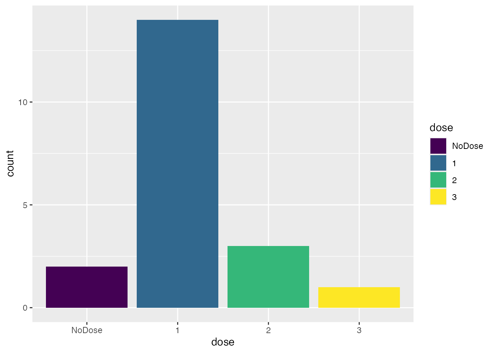

A700-Simulation.RmdThe escalation package by Kristian Brock. Documentation is hosted at https://brockk.github.io/escalation/
Before reading this document on simulating dose-finding trials using the escalation package, be sure to check out the README file. It explains how to compose dose-finding designs using the flexible syntax provided in escalation.
Once you have composed a design that appeals, you will want to learn about its operating performance by running many simulated trials. That is the focus of this vignette. We study simulations because we believe they will predict the performance we can expect in reality. By operating performance, we mean:
escalation
Simulations are run using the simulate_trials function. It can be called on any dose-escalation design. Specifying dose-escalation models is the focus of the package README file.
Let us start with a very simple example by simulating performance of the 3+3 design in trial of five doses. We need to specify the unknown true probabilities of toxicity at the doses under investigation. Let us investigate:
true_prob_tox <- c(0.12, 0.27, 0.44, 0.53, 0.57)
That is, doses 1 and 2 are what most clinicians would describe as tolerable, but doses 3, 4, and 5 are reasonably toxic. The 3+3 design does not target a particular probability of toxicity but empirically, the design tends to target doses with associated toxicity rates of 10-25%(Korn et al. 1994; Iasonos et al. 2008).
We must load the escalate package:
library(escalation)
For the purposes of illustration, let us simulate a modest number of trials:
num_sims <- 50
In reality, if we want to have confidence in the simulated results, we would tend to run thousands of iterations (Wheeler et al. 2019). We run a small number here so that this vignette compiles quickly.
We run simulations in our scenario using:
set.seed(123) sims <- get_three_plus_three(num_doses = 5) %>% simulate_trials(num_sims = num_sims, true_prob_tox = true_prob_tox)
We set the random number generator seed in the example above so that results are (hopefully) reproducible. Despite setting the seed, the results could still vary across different operating systems or versions of R.
When printed to the screen, the sims object shows some useful summary information:
sims #> Number of iterations: 50 #> #> Number of doses: 5 #> #> True probability of toxicity: #> 1 2 3 4 5 #> 0.12 0.27 0.44 0.53 0.57 #> #> Probability of recommendation: #> NoDose 1 2 3 4 5 #> 0.08 0.40 0.38 0.10 0.04 0.00 #> #> Probability of administration: #> 1 2 3 4 5 #> 0.3466 0.3864 0.2045 0.0455 0.0170 #> #> Sample size: #> Min. 1st Qu. Median Mean 3rd Qu. Max. #> 3.00 9.00 9.00 10.56 12.00 24.00 #> #> Total toxicities: #> Min. 1st Qu. Median Mean 3rd Qu. Max. #> 2.00 2.00 2.50 2.66 3.00 6.00 #> #> Trial duration: #> Min. 1st Qu. Median Mean 3rd Qu. Max. #> 2.70 7.05 10.55 11.20 14.55 27.10
Each of those pieces of information is available progmatically by R functions. For instance, the probability of recommending each dose at the final analysis, inferred from these simulated iterations, is:
prob_recommend(sims) #> NoDose 1 2 3 4 5 #> 0.08 0.40 0.38 0.10 0.04 0.00
Bear in mind that these probabilities are the result of a random process. If we run the simulations again with a different seed, we will get different results. Recall also that they are informed by a small number of simulated replicates so there will be considerable uncertainty around these statistics. If we ran a greater number of replicates, there would be less uncertainty.
We infer from the probabilities above that the design is likely to recommend one of the first two doses. However, there is a non-trivial probability that the design will recommend the third dose, which is probably too toxic, or recommend no dose at all.
How many patients are required?
summary(num_patients(sims)) #> Min. 1st Qu. Median Mean 3rd Qu. Max. #> 3.00 9.00 9.00 10.56 12.00 24.00
We see that the simulated trials use between 3 and 24 patients, with an expected number of 9-12.
summary(n_at_recommended_dose(sims)) #> Min. 1st Qu. Median Mean 3rd Qu. Max. NA's #> 3.000 3.000 3.000 3.783 5.250 6.000 4
Of those, 3-4 at treated at the dose that is eventually recommended.
We can see how many patients are treated at each dose on a trial-by-trial basis. Here are the allocation counts for the first 10 trials:
n_at_dose(sims) %>% head(10) #> # A tibble: 10 x 5 #> `1` `2` `3` `4` `5` #> <int> <int> <int> <int> <int> #> 1 3 0 0 0 0 #> 2 6 6 6 6 0 #> 3 6 6 0 0 0 #> 4 3 3 3 0 0 #> 5 3 3 6 3 0 #> 6 3 6 0 0 0 #> 7 6 3 0 0 0 #> 8 3 3 3 0 0 #> 9 6 3 6 0 0 #> 10 3 3 3 0 0
This information is aggregated in the probabilities of administation, i.e. the probability that an individual patient is treated at each dose-level:
prob_administer(sims) #> 1 2 3 4 5 #> 0.34659091 0.38636364 0.20454545 0.04545455 0.01704545
We might be alarmed to learn that roughly 25% of patients are treated at doses 3-5, the doses we believe to be excessively toxic.
We can also see how many toxicities there were at each dose in the simulated trials (again, here are just the first 10):
tox_at_dose(sims) %>% head(10) #> # A tibble: 10 x 5 #> `1` `2` `3` `4` `5` #> <int> <int> <int> <int> <int> #> 1 2 0 0 0 0 #> 2 1 1 1 3 0 #> 3 1 2 0 0 0 #> 4 0 0 3 0 0 #> 5 0 0 1 2 0 #> 6 0 2 0 0 0 #> 7 1 2 0 0 0 #> 8 0 0 2 0 0 #> 9 1 0 2 0 0 #> 10 0 0 2 0 0
and a summary of the total number of toxicities seen in the replicates:
We expect to see about 2-3 toxicities using this design in this scenario with no iteration producing more than 6 toxicities.
For convenience, simulations can be cast to a tibble:
library(tibble) as_tibble(sims) %>% head(12) #> # A tibble: 12 x 12 #> .iteration .depth time dose tox n empiric_tox_rate mean_prob_tox #> <int> <dbl> <dbl> <ord> <dbl> <dbl> <dbl> <dbl> #> 1 1 2 2.7 NoDo… 0 0 0 0 #> 2 1 2 2.7 1 2 3 0.667 NA #> 3 1 2 2.7 2 0 0 NaN NA #> 4 1 2 2.7 3 0 0 NaN NA #> 5 1 2 2.7 4 0 0 NaN NA #> 6 1 2 2.7 5 0 0 NaN NA #> 7 2 9 27.1 NoDo… 0 0 0 0 #> 8 2 9 27.1 1 1 6 0.167 NA #> 9 2 9 27.1 2 1 6 0.167 NA #> 10 2 9 27.1 3 1 6 0.167 NA #> 11 2 9 27.1 4 3 6 0.5 NA #> 12 2 9 27.1 5 0 0 NaN NA #> # … with 4 more variables: median_prob_tox <dbl>, admissible <lgl>, #> # recommended <lgl>, true_prob_tox <dbl>
This returns a tidyverse tibble, essentially a fancy data-frame, with the followign columns:
.iteration, the number of the simulated trial iteration, i.e. .iteration == 1 is the first simulated trial, etc;.depth, the cohort number. In the example above we see that the first trial ended after the second cohort but the second trial went as far as cohort 9;time, the time of the analysis, essentially the sum of all of the intra-patient recruitment times;dose, the numerical dose-level or ‘NoDose’ for the option to select no dose;tox, the number of toxicity events seen;n, the number of patients evaluated;empiric_tox_rate, simply tox divided by n;mean_prob_tox, if the method supports statistical estimation, the modelled mean toxicity probability;median_prob_tox, if the method supports statistical estimation, the modelled median toxicity probability;recommended, a logical to show whethet this dose (or stopping) was recommended by this iteration;true_prob_tox, the true yet unknown probability of toxicity in this simulated scenario.Other selection models might add more columns to this object.
Getting the results in tibble format is liberating for analysis and visualisation. For instance, using further tidyverse packages, it is simple to visualise the frequencies of the final model recommendations:
library(dplyr) library(ggplot2) as_tibble(sims) %>% filter(recommended) %>% ggplot(aes(x = dose, fill = dose)) + geom_bar()

Let us consider now a model-based dose-finding approach in the same scenario. We will investogate a CRM design, using the model from the dfcrm package. Let us say that we are targeting a 25% toxicity rate:
target <- 0.25
and that our prior beliefs on the toxicity rates can be represented by:
skeleton <- c(0.05, 0.1, 0.25, 0.4, 0.6)
i.e. we believe the third dose is the dose we seek.
The CRM design as provided by dfcrm offers no native stopping behaviour. Let us say we are willing to use up to 12 patients. How does performance of this simple design compare to the 3+3 above?
sims <- get_dfcrm(skeleton = skeleton, target = target) %>% stop_at_n(n = 12) %>% simulate_trials(num_sims = num_sims, true_prob_tox = true_prob_tox) sims #> Number of iterations: 50 #> #> Number of doses: 5 #> #> True probability of toxicity: #> 1 2 3 4 5 #> 0.12 0.27 0.44 0.53 0.57 #> #> Probability of recommendation: #> NoDose 1 2 3 4 5 #> 0.00 0.24 0.50 0.18 0.06 0.02 #> #> Probability of administration: #> 1 2 3 4 5 #> 0.485 0.225 0.115 0.160 0.015 #> #> Sample size: #> Min. 1st Qu. Median Mean 3rd Qu. Max. #> 12 12 12 12 12 12 #> #> Total toxicities: #> Min. 1st Qu. Median Mean 3rd Qu. Max. #> 0.00 3.00 3.00 3.22 4.00 5.00 #> #> Trial duration: #> Min. 1st Qu. Median Mean 3rd Qu. Max. #> 5.70 9.85 11.60 12.03 14.12 21.20
The first thing we note is that the CRM design is much less likely to select dose 1 and more likely to select dose 2. If we believe that efficacy is associated with toxicity (and we should if we are using the CRM approach), then this is a good thing.
However, our design has no method to stop if all doses are too toxic. We saw above that the 3+3 design occasionally recommended no dose. Thus, when comparing this CRM design to the 3+3, we are not comparing like with like. It is simple to add a stopping behaviour for excess toxicity:
sims <- get_dfcrm(skeleton = skeleton, target = target) %>% stop_at_n(n = 12) %>% stop_when_too_toxic(dose = 1, tox_threshold = 0.35, confidence = 0.8) %>% simulate_trials(num_sims = num_sims, true_prob_tox = true_prob_tox) sims #> Number of iterations: 50 #> #> Number of doses: 5 #> #> True probability of toxicity: #> 1 2 3 4 5 #> 0.12 0.27 0.44 0.53 0.57 #> #> Probability of recommendation: #> NoDose 1 2 3 4 5 #> 0.02 0.22 0.36 0.30 0.10 0.00 #> #> Probability of administration: #> 1 2 3 4 5 #> 0.4264 0.1929 0.1574 0.1980 0.0254 #> #> Sample size: #> Min. 1st Qu. Median Mean 3rd Qu. Max. #> 3.00 12.00 12.00 11.82 12.00 12.00 #> #> Total toxicities: #> Min. 1st Qu. Median Mean 3rd Qu. Max. #> 1.00 3.00 3.00 3.34 4.00 6.00 #> #> Trial duration: #> Min. 1st Qu. Median Mean 3rd Qu. Max. #> 2.600 8.825 10.800 11.898 14.575 22.400
We now see some trial iterations that stop and recommend no dose for further study. We cannot see from this scenario whether this design stops frequently enough because an appropriate decision in this scenario is to select one of the lowest two doses. We will research a scenario where all doses are too toxic below.
Given the fixed sample size, how many are treated at the dose that is eventually recommended
summary(n_at_recommended_dose(sims)) #> Min. 1st Qu. Median Mean 3rd Qu. Max. NA's #> 0.000 3.000 3.000 4.347 6.000 12.000 1
Similar to the 3+3 design, this CRM design treats 3-4 at the recommended dose. We might want to ensure that there are at least 6 patients at the recommended dose. How would that affect the operating characteristics?
sims <- get_dfcrm(skeleton = skeleton, target = target) %>% stop_at_n(n = 12) %>% stop_when_too_toxic(dose = 1, tox_threshold = 0.35, confidence = 0.8) %>% demand_n_at_dose(n = 6, dose = 'recommended') %>% simulate_trials(num_sims = num_sims, true_prob_tox = true_prob_tox)
As required, there are now at least 6 patients at the recommended dose:
summary(n_at_recommended_dose(sims)) #> Min. 1st Qu. Median Mean 3rd Qu. Max. NA's #> 6.000 6.000 6.000 6.429 6.000 12.000 1
So how does this affect the expected overall sample size?
sims #> Number of iterations: 50 #> #> Number of doses: 5 #> #> True probability of toxicity: #> 1 2 3 4 5 #> 0.12 0.27 0.44 0.53 0.57 #> #> Probability of recommendation: #> NoDose 1 2 3 4 5 #> 0.02 0.18 0.54 0.20 0.04 0.02 #> #> Probability of administration: #> 1 2 3 4 5 #> 0.3866 0.2899 0.1387 0.1513 0.0336 #> #> Sample size: #> Min. 1st Qu. Median Mean 3rd Qu. Max. #> 6.00 12.00 12.00 14.28 15.00 24.00 #> #> Total toxicities: #> Min. 1st Qu. Median Mean 3rd Qu. Max. #> 2.00 3.00 4.00 4.16 5.00 10.00 #> #> Trial duration: #> Min. 1st Qu. Median Mean 3rd Qu. Max. #> 3.50 10.82 14.00 14.24 16.95 25.20
Pleasingly, the expected sample size only increases by about 3 patients. Obviously, the maximum increases by 6 patients.
All of the above simulations assume that patients are evaluated in cohorts of three. That assumption is made mainly by convention but naturally it is possible to change that.
We can adjust in simulations the way that simulated patients arrive by providing a custom function via the sample_patient_arrivals parameter. For instance, if we want the model to recommend a new dose after every other patient, we can specify that the sample_patient_arrivals function samples patients in cohorts of two:
patient_arrivals_func <- function(current_data) cohorts_of_n(n = 2) model <- get_dfcrm(skeleton = skeleton, target = target) %>% stop_at_n(n = 12) %>% stop_when_too_toxic(dose = 1, tox_threshold = 0.35, confidence = 0.8) %>% demand_n_at_dose(n = 6, dose = 'recommended') sims <- model %>% simulate_trials(num_sims = num_sims, true_prob_tox = true_prob_tox, sample_patient_arrivals = patient_arrivals_func)
The sample_patient_arrivals function samples the arrival times of new patients for the next interim analysis. The new patients will be added to the existing patients and the model will be fit to the set of all patients. The function that simulates patient arrivals should take as a single parameter a data-frame with one row for each existing patient and columns including cohort, patient, dose, tox, time (and possibly also eff and weight, if a phase I/II or time-to-event method is used). The provision of data on the existing patients to sample_patient_arrivals allows the patient sampling function to be adaptive. The function should return a data-frame with a row for each new patient and a column for time_delta, the time between the arrival of this patient and the previous, like the cohorts_of_n function does:
cohorts_of_n(n = 5) #> time_delta #> 1 0.1 #> 2 1.2 #> 3 0.2 #> 4 0.5 #> 5 0.2
The examples demonstrated so far simulate whole trials, from the recruitment and evaluation of the first patient to the last. However, simulate_trials will gladly simulate the culmination of trials that are partly completed. We just have to specify the outcomes already observed via the previous_outcomes parameter. Each simulated trial will commence from those outcomes seen thus far.
For example, let us say that we have observed the first cohort of three already at dose 1, yielding one toxicities and two non-toxicities.
set.seed(123) sims <- model %>% simulate_trials(num_sims = num_sims, true_prob_tox = true_prob_tox, previous_outcomes = '1NTN')
The appearance of an early toxicity at dose 1 appear to make it more likely that a low dose will be recommended, as we might expect:
prob_recommend(sims) #> NoDose 1 2 3 4 5 #> 0.00 0.36 0.60 0.04 0.00 0.00
The previous_outcomes can be described by the outcome string method demonstrated above. They can also be provided via a data-frame, with the following columns:
previous_outcomes <- data.frame( patient = 1:3, cohort = c(1, 1, 1), tox = c(0, 1, 0), dose = c(1, 1, 1) ) set.seed(123) sims <- model %>% simulate_trials(num_sims = num_sims, true_prob_tox = true_prob_tox, previous_outcomes = previous_outcomes)
We have just described the trial starting point in two different ways. The simulated iterations should produce exactly the same results:
prob_recommend(sims) #> NoDose 1 2 3 4 5 #> 0.00 0.36 0.60 0.04 0.00 0.00
Likewise, we can also set the dose to be given to the next patient or cohort of patients by specifying the next_dose parameter. For example, if we want to commence our simulations at dose 5, we would run:
sims <- model %>% simulate_trials(num_sims = num_trials, true_prob_tox = true_prob_tox, next_dose = 5)
If omitted, the next dose is calculated by invoking the model on the prevailing outcomes, a set that may well be empty. In this setting, most models would opt to start at dose 1 but this may vary by method.
In simulations, the dose selection model is fit to the prevailing data at each interim analysis. By default, only the final model fit for each simulated trial is returned. This is done to conserve memory. With a high number of simulated trials, storing many model fits per trial may cause the executing machine to run out of memory. However, you can force this function to retain all model fits by specifying return_all_fits = TRUE.
For example:
sims <- get_three_plus_three(num_doses = 5) %>% simulate_trials(num_sims = num_sims, true_prob_tox = true_prob_tox, return_all_fits = TRUE)
We can verify that there are now many analyses per trial:
sapply(sims$fits, length) #> [1] 4 3 4 3 6 5 2 4 4 3 5 5 5 4 5 4 3 5 3 6 4 3 3 5 5 5 7 5 3 6 4 4 3 4 5 5 4 5 #> [39] 5 5 4 6 6 3 5 3 5 3 5 5
The multiple fits within a single simulated trial are distinguishable in tibble view via the .depth column:
as_tibble(sims) %>% head(12) #> # A tibble: 12 x 12 #> .iteration .depth time dose tox n empiric_tox_rate mean_prob_tox #> <int> <dbl> <dbl> <ord> <dbl> <dbl> <dbl> <dbl> #> 1 1 1 0 NoDo… 0 0 0 0 #> 2 1 1 0 1 0 0 NaN NA #> 3 1 1 0 2 0 0 NaN NA #> 4 1 1 0 3 0 0 NaN NA #> 5 1 1 0 4 0 0 NaN NA #> 6 1 1 0 5 0 0 NaN NA #> 7 1 2 4.40 NoDo… 0 0 0 0 #> 8 1 2 4.40 1 0 3 0 NA #> 9 1 2 4.40 2 0 0 NaN NA #> 10 1 2 4.40 3 0 0 NaN NA #> 11 1 2 4.40 4 0 0 NaN NA #> 12 1 2 4.40 5 0 0 NaN NA #> # … with 4 more variables: median_prob_tox <dbl>, admissible <lgl>, #> # recommended <lgl>, true_prob_tox <dbl>
In contrast to the previous usage of as_tibble(sims), we see that there are now model fits at multiple fits within each simulated trial .iteration. The rows at .depth == 1 reflect the initial model fit before any new patients are recruited, essentially the starting point of this simulated trial. The rows at .depth == 2 show the model fit after the first cohort of patients, and so on.
Designs must eventually choose to stop the trial. However, some selectors, like those derived from get_dfcrm, offer no default stopping method. You may need to append stopping behaviour to your selector via something like stop_at_n or stop_when_n_at_dose, etc. To safeguard against simulating runaway trials that never end, the simulate_trials function will halt a simulated trial after 30 invocations of the dose-selection decision. To breach this limit, specify i_like_big_trials = TRUE in the function call. However, when you forego the safety net, the onus is on you to write selectors that will eventually stop the trial, so be careful!
sims <- get_dfcrm(skeleton = skeleton, target = target) %>% stop_at_n(n = 99) %>% simulate_trials(num_sims = 1, true_prob_tox = true_prob_tox, i_like_big_trials = TRUE)
num_patients(sims) #> [1] 99
Iasonos, Alexia, Andrew S Wilton, Elyn R Riedel, Venkatraman E Seshan, and David R Spriggs. 2008. “A Comprehensive Comparison of the Continual Reassessment Method to the Standard 3 + 3 Dose Escalation Scheme in Phase I Dose-Finding Studies.” Clinical Trials (London, England) 5 (5): 465–77. https://doi.org/10.1177/1740774508096474.
Korn, Edward L., Douglas Midthune, T. Timothy Chen, Lawrence V. Rubinstein, Michaele C. Christian, and Richard M. Simon. 1994. “A Comparison of Two Phase I Trial Designs.” Statistics in Medicine 13 (18): 1799–1806. https://doi.org/10.1002/sim.4780131802.
Wheeler, Graham M., Adrian P. Mander, Alun Bedding, Kristian Brock, Victoria Cornelius, Andrew P. Grieve, Thomas Jaki, et al. 2019. “How to Design a Dose-Finding Study Using the Continual Reassessment Method.” BMC Medical Research Methodology 19 (1). https://doi.org/10.1186/s12874-018-0638-z.